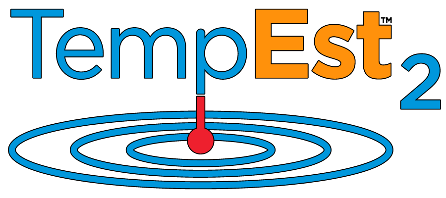

TempEst Modeling¶
The TempEst (stream TEMPerature ESTimation) models are a suite of river temperature models focused on sites without local monitoring data (ungaged modeling). At one-kilometer resolution, TempEst models provide the fastest available estimates of historical stream temperatures at daily (including mean and maximum) and monthly timesteps. This website includes documentation and references for the TempEst models and related projects. A notable spinoff is libSCHEMA, a Python package which provides a generic implementation of the SCHEMA modeling framework (see TempEst 2 reference) - you provide the model logic, libSCHEMA handles all the computation details (including a Basic Model Interface implementation for use with the NextGen National Water Model Framework).
If you use TempEst models, software, or data in your research, please cite the appropriate reference, listed below. All TempEst software is available under the terms of the GNU General Public License v3, meaning that you are free to use, modify, and redistribute the software with appropriate attribution and so long as any derivative software is made open-source under the same terms.
Any TempEst software featured on this website is usable and reasonably complete, and may or may not be under active development. All major TempEst models undergo peer review by way of the accompanying manuscript, though spinoff software with minimal new scientific content may not (for example, the SCHEMA framework is introduced in the peer-reviewed TempEst 2 paper, but LibSCHEMA, which did not exist at the time of publication, has not undergone further peer review in its own right).
I am willing to consider minor feature requests via the projects’ respective Issues pages, but make no guarantees about carrying them out. I am particularly interested in hearing about modifications to the workflow that would be helpful in practical use. I am also willing to reimplement TempEst 1/2 data retrieval independently of Google Earth Engine upon request.
TempEst Software Notes¶
Full descriptions should be sought in the Overview links above.
The TempEst models differ substantially in their architecture, but a shared characteristic is that their prediction and data retrieval implementations are completely independent of the presence of a gage. They are all capable of running entirely off of coordinates, with no reference to established monitoring locations and using datasets that are available for the entire contiguous United States. They are also rigorously tested for ungaged use and extrapolation capabilities, including their performance for unseen regions (i.e., with no nearby gages to learn from), unseen time windows (testing their stability in time), and unseen elevations (evaluating their ability to extrapolate upwards).
TempEst 1 and 2 are provided as R scripts with Google Earth Engine data retrieval code. LibSCHEMA is a Python package.
TempEst 1¶
TempEst 1 is the model that started it all, and may be described as just “TempEst”. TempEst 1 is a machine learning (random forest) model that uses high-resolution, but low-frequency Landsat land surface temperature (LST) to estimate monthly mean stream temperatures, demonstrated for rivers from a few meters to a kilometer wide and for both minimally-disturbed and heavily-modified watersheds. TempEst 1 is the fastest way to get an estimate of general temperature trends.
Scientifically, TempEst 1 demonstrated that “point-oriented, sitewise” models - meaning those that use data just for the point of interest, not the entire watershed (point-oriented) and do not consider the rest of the river network (sitewise) - can generate skillful stream temperature predictions with far lower computational and data requirements than watershed-oriented or network-aware models. TempEst 1’s manuscript also established the extensive and rigorous testing procedures common to all subsequent TempEst modeling work and the use of wholly gage-independent data retrieval and prediction, with the manuscript including a demonstration for 100 unmonitored locations.
TempEst 2 and FAST¶
TempEst 2’s primary objective was to extend TempEst 1 to daily-resolution predictions. In the process, it established an entirely different architecture, retaining only the point-oriented, sitewise, LST-forced design. Experiments in the process of TempEst 2 development led to the creation of the Seasonal Conditions Historical Expectation with Modeled Anomaly (SCHEMA) architecture, a generalization of stochastic models. The SCHEMA architecture allowed TempEst 2 to be designed with linear geostatistical (kriging) models predicting site-specific coefficients, enabling improvements in simplicity, interpretability, efficiency, and extrapolation capability compared to TempEst 1.
TempEst 2-FAST (“Fast Analysis in Space and Time”) is a variant on TempEst 2 optimized for, well, what it says on the tin. TempEst 2 is optimized for predictions at a sample of specific points, and gets a bit unwieldy at over ~10,000 points or so (it also tends to require data chunking for over ~2,000 points). In general, that’s already a huge sample, and TempEst 2 works well for most use cases. However, one might want to analyze continuous, gridded SWT estimates over an entire state, large watershed, or country. There, TempEst 2 gets awkward. The solution: a version of TempEst 2 optimized for gridded application over large scales. That’s FAST. The model logic is the same, but designed to work over gridded data at 1-km resolution.
TempEst 2-FAST scales much better, but it takes a lot more computing setup than TempEst 2. Perhaps more importantly, since it uses a grid and not discrete points, it cannot be used to pinpoint a specific river near a confluence, for example.
TempEst-NEXT/NEWT¶
TempEst-NEWT/NEXT build on the SCHEMA foundation developed by TempEst 2 to implement forecasting. In the process, they improve support for nonstationarity and disturbances. TempEst-NEWT is a straightforward standalone implementation of SCHEMA for individual watersheds, and can be used as a watershed-specific model. It also supports modification engines to dynamically adjust model coefficients and has smarter anomaly handling than TempEst 2.
TempEst-NEXT, in turn, provides watershed generalization capabilities - coefficient estimation for ungaged watersheds. Unlike TempEst 2, there is more emphasis on directly physically relevant conditions and it does not use latitude or longitude, forcing the model to emphasize site behavior directly.
LibSCHEMA¶
LibSCHEMA is based on the possibility that the SCHEMA architecture might be more generally useful, allowing others to use it without having to implement most of the model software themselves. With LibSCHEMA, a researcher implementing a SCHEMA model need only provide functions for the core model logic - predicting the seasonal and anomaly terms. Then, the model logistics (processing input/output, running timesteps, etc) are provided automatically. LibSCHEMA also provides a Basic Model Interface implementation for those concerned with model interoperability, particularly through NOAA’s NextGen National Water Model Framework.
I have found that general logistics, rather than the core model logic, are responsible for the majority of the source code and the vast majority of debugging effort, so I hope that LibSCHEMA can spare other researchers considerable effort in model implementation.
Links and References¶
TempEst 1 (monthly temperature estimation): https://github.com/mines-ciroh/tempest1 - Philippus, D., A. Sytsma, A. Rust, and T. S. Hogue. 2024. “A machine learning model for estimating the temperature of small rivers using satellite-based spatial data.” Remote Sensing of Environment, 311: 114271. https://doi.org/10.1016/j.rse.2024.114271.
TempEst 2 (daily temperature estimation): https://github.com/mines-ciroh/tempest2 - Philippus, D., C. R. Corona, K. Schneider, A. Rust, and T. S. Hogue. 2025. “Satellite-based spatial-statistical modeling of daily stream water temperatures at the CONUS scale.” Journal of Hydrology, 661: 133321. https://doi.org/10.1016/j.jhydrol.2025.133321.
TempEst-NEWT/NEXT (daily temperature forecasting): https://github.com/mines-ciroh/tempest-next, https://github.com/mines-ciroh/tempest-newt - Philippus, Corona and Hogue. “Daily Stream Water Temperature Modeling and Forecasting for Ungaged Watersheds at the CONUS Scale.” In review.
LibSCHEMA (generic SCHEMA library): https://pypi.org/project/libschema/ - cite TempEst 2.
Three-sine river temperature seasonality: https://pypi.org/project/rtseason/ - Philippus, D., C. R. Corona, and T. S. Hogue. 2024. “Improved Annual Temperature Cycle Function for Stream Seasonal Thermal Regimes.” Journal of the American Water Resources Association, 60 (6). https://doi.org/10.1111/1752-1688.13228.

{kind=link}
{kind=link}
{kind=link}